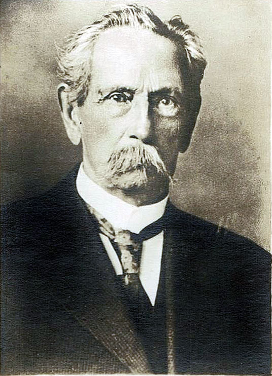
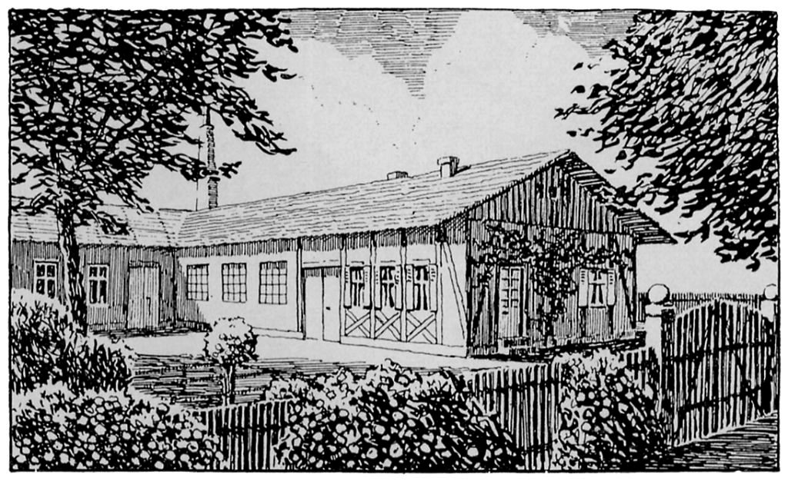
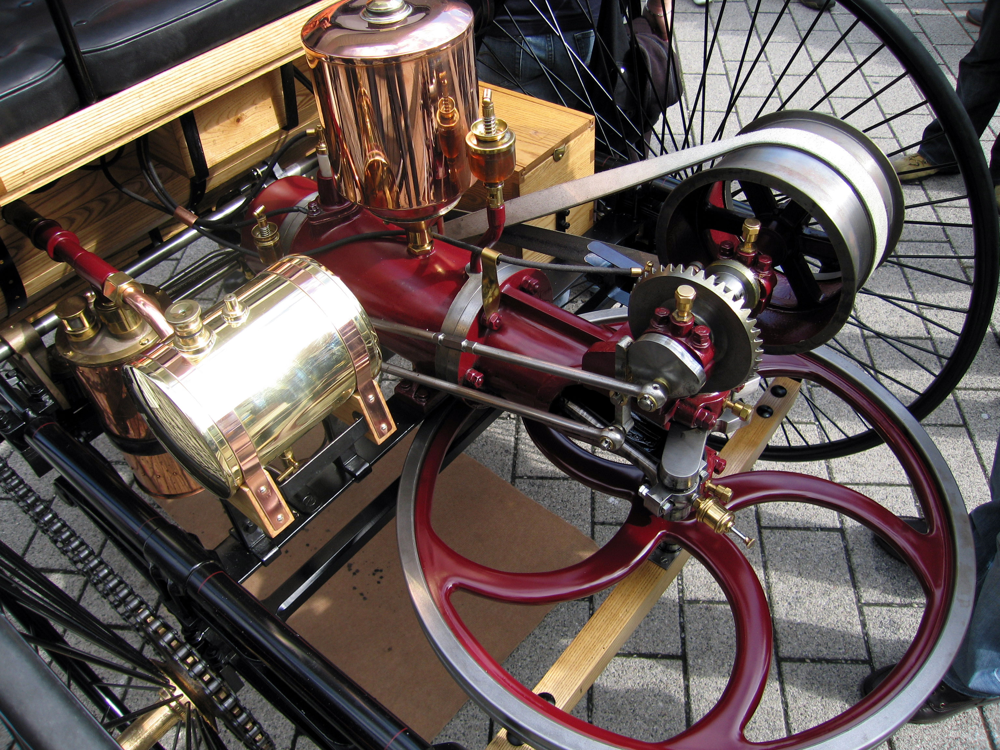
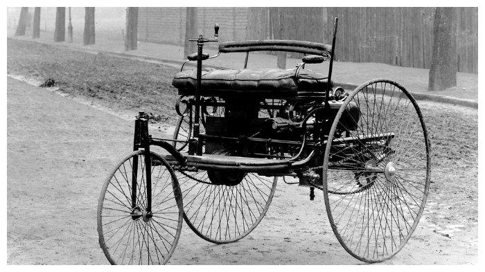
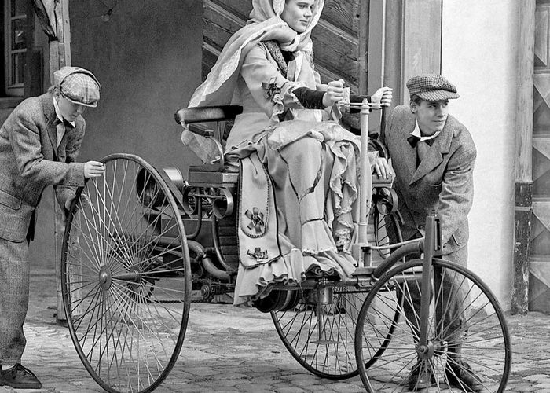
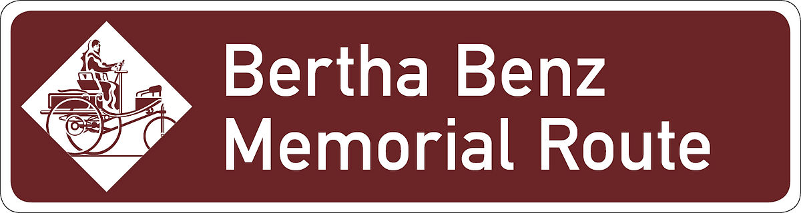

Biodata
Karl Friedrich adalah seorang sarjana dari Jerman yang dikenal sebagai penemu dari mobil dengan bahan bakar bensin (gazoline). Walaupun pada saat yang bersamaan Gottlieb Daimler yang berpasangan dengan Wilhelm Maybach juga bekerja meneliti mesin dengan bahan bakar bensin juga, Benz terlebih dahulu menyelesaikan penemuan itu dan mempatenkan penemuan tersebut pada tahun 1879.
Benz lahir pada tanggal 25 November 1844 di Karlshuhe , Baden, jerman. Nama asli dia adalah Karl Friedrich Michael Vaillant. Nama Belakang Benz digunakan olehnya untuk menghormati dan menghargai ayahnya Johann George Benz yang meninggal ketika usia dia masih 2 tahun. Ayah Benz adalah seorang masinis. Dari kecil Benz sudah menunjukkan ketertarikannya terhadap ilmu sains. Benz melanjutkan pelajarannya di universitas politeknik Karlsruhe dibawah bimbingan Ferdinand Redtenbacher yang dikenal sebagai orang yang merintis jurusan mesin (mechanical engineering) di universitas. Dia dapat menyelesaikannya dalam usia 19 tahun. Kemudian ketika usianya 27 tahun, dia membangun sebuah bengkel bersama teman-temanya pada tahun 1871 di manheinn yang digunakan untuk menjual peralatan kostruksi. Namun usahanya tidak mengalami kerugian, tetapi dia tidak pernah menyerah untuk mewujudkan impiannya dapat membuat kereta kuda tanpa kuda.
Penelitiannnya dimulai pada tahun 1878, dia mulai menciptakan mesin dua langkah. Yang kemudian disusul penciptaan mesin – mesin industry yang membuat perusahaannya sukses. Dari kesuksesan ini Benz dapat menghasilkan ciptaannya yakni motorwagen yang menjadi cikal bakal mobil berbahan bakar bensin untuk pertama kali. Pada 1903 Benz pensiun dari Benz & Co., tapi tetap sebagai anggota dari papan pengawas sampai kematiannya. Perusahaan Benz dan Daimler bergabung membentuk Daimler-Benz di 1926, yang kemudian berganti nama menjadi Mercedes-Benz Benz meninggal di Ladenburg di Neckar, Jerman pada tanggal 4 April 1929.
Riwayat Hidup
Biografi Karl Benz. Ia dikenal sebagai pendiri dari perusahaan mobil terkenal yaitu Mercedes Benz. Bernama lengkap Karl Friedrich Benz adalah Seorang insinyur mesin Jerman, Karl Benz merancang dan membangun secara praktis mobil pertama di dunia yang akan didukung oleh mesin pembakaran internal. Pada tanggal 29 Januari 1886, Benz menerima hak paten pertama (DRP No 37.435) untuk mobil berbahan bakar bensin. Itu adalah mobil tiga roda; Benz membangun mobil roda empat pertama pada tahun 1891. dan Perusahaan yang didirikan oleh Benz & Company, menjadi perusahaan pertama sekaligus menjadi produsen terbesar di dunia mobil oleh 1900. Karl Friedrich Benz lahir tahun 1844 di Baden Muehlburg, Jerman (sekarang bagian dari Karlsruhe). Ia adalah anak seorang sopir mesin. Benz sekolah di sekolah Karlsruhe jurusan tata bahasa dan kemudian Politeknik Universitas Karlsruhe. Pada tahun 1871, Ia mendirikan perusahaan pertama dengan mitra Agustus Ritter, “Iron Foundry dan Machine Shop” Toko pemasok bahan bangunan. Benz memulai karyanya pada mesin dua-stroke, dengan harapan menemukan pendapatan atau penghasilann baru. Ia menerima hak paten pertama pada tahun 1879. Pada tahun 1883, ia mendirikan Benz & Company untuk memproduksi mesin industri di Mannheim, Jerman. Ia kemudian mulai merancang sebuah “motor kereta”, dengan mesin empat-stroke (berdasarkan hak paten Nikolaus Otto). Benz merancang mesinnya (958cc, 0.75hp) dan rangka untuk kendaraan roda tiga dengan pengapian listrik, roda gigi diferensial, dan air pendingin. Mobil itu pertama di jalankan di Mannheim pada 1885. Pada tanggal 29 Januari 1886, ia dianugrahi hak paten untuk mobil berbahan bakar gas nya (DRP 37.435) dan pada bulan Juli, ia mulai menjual mobil kepada publik.
Mesin Carl Benz
Bicara soal sejarah mesin, Carl Benz kali pertama mengembangkan mesin bensin stasioner berkonfigurasi 2 tak satu silinder pada 1879. Untuk dapur pacu Benz Patent-Motorwagen bersumber dari mesin 954 cc satu silinder empat langkah (4 tak). Desain mesinnya sebagian besar sama seperti mesin pembakaran internal saat ini, ada kruk as (crankshaft) dengan penyeimbang, pengapian listrik dan berpendingin air. Soal tenaga, mesin itu mampu menghasilkan tenaga maksimal sebesar 0,55 kW (0,7 dk) pada 400/menit. Jika dibandingkan dengan mesin konvensional saat ini, tenaga itu memang tidak ada apa-apanya. Misal dibandingkan dengan mesin Vario 125 cc, tenaga Benz Patent-Motorwagen kurang dari sepersepuluhnya. Vario 125 memiliki output power mencapai 10,9 dk. Benz Patent-Motorwagen memiliki bobot mesin mencapai 100 kg. Di masa itu, mesin tersebut tergolong ringan. Fakta lain mesin Benz Patent-Motorwagen, memiliki desain bak mesin terbuka, katup intake yang dapat digeser dengan gagang eksentrik, katup pembuangan yang dioperasikan oleh cakram cam, pelatuk klep dan pushrod, serta menggunakan sistem pelumasan tetes.
Mobil Carl Benz
Mesin itu dipasangkan dengan transmisi otomatis CVT, yang dikombinasikan penggunaan gir dan rantai pada kedua sisi poros roda.Campuran bahan bakar dengan udara diproses melalui 'permukaan' atau karburator penguapan, sebuah rancangan Benz lainnya yang juga berfungsi sebagai tangki bahan bakar 4,5 liter. Benz Patent-Motorwagen menggunakan roda berukuran sangat besar berjumlah 3 buah. Kedua roda belakang terpasang secara horizontal pada sasis, karena ia khawatir efek giroskopik dari pemasangan secara vertikal akan mengganggu kemudi dan stabilitas kendaraan. Kendaraan tersebut membutuhkan hingga 10 liter bensin untuk setiap 100 kilometer perjalanan. Fakta bahwa kapasitas bahan bakar tidak memadai untuk jarak yang lebih jauh bukanlah masalah besar pada awalnya. Di masanya, tujuan utama Benz Patent Motorwagen adalah untuk menunjukkan bahwa desain keseluruhan - dan konsep kendaraan mobil sesuai kegunaannya.
Dibalik Mercedez Benz
Pada suatu pagi tanggal 5 Agustus 1888, tanpa sepengetahuan suaminya, Bertha menaiki Benz Motorwagen model 3 dan mengendarainya sepanjang 104 kilometer dari Mannheim demi mengunjungi sang ibunda di kota kelahirannya, Pforzheim. Ia disertai kedua putranya, Eugen dan Richard. Namun sesungguhnya motif dari rencana perjalanan ini adalah untuk meyakinkan Karl dan juga masyarakat tentang kehandalan Benz Motorwagen. Dalam perjalanannya, mobil kehabisan bahan bakar, hingga Eugen dan Richard harus turun untuk mendorong.
Mereka berhenti untuk isi tanki dengan ligroin yang dibeli di toko obat di Wiesloch. Pada masa itu petrol dan bahan mentah minyak lainnya hanya dapat dibeli di toko obat. Lebih hebatnya, Bertha juga membersihkan jalur bahan bakar pada karburator dengan menggunakan pin dari topinya, dan mengganti brake lining yang ia pesan khusus dari seorang pembuat sepatu. Bertha kemudian memasangkannya pada dudukan brake pad. Perjalanan makin melelahkan karena jalur yang dilaluinya belum biasa untuk sebuah mobil. Eugen dan Richard harus turun beberapa kali untuk mendorong ketika mobil menaiki jalur mendaki. Baca juga: Keunikan Mi Panjang Umur yang Hanya Dinikmati 5 Kali dalam Setahun Bertha Benz dan kedua putranya tiba di Pforzheim pada malam hari. Mereka kemudian segera mengabari Karl lewat telegram.
Jalur Legendaris
Jalur tersebut kemudian dinamakan dengan jalur Bertha Benz Memorial Route untuk mengenang perjalan awal yang dilakukan oleh bertha benz dan kedua anaknya yaitu eugene dan richard benz